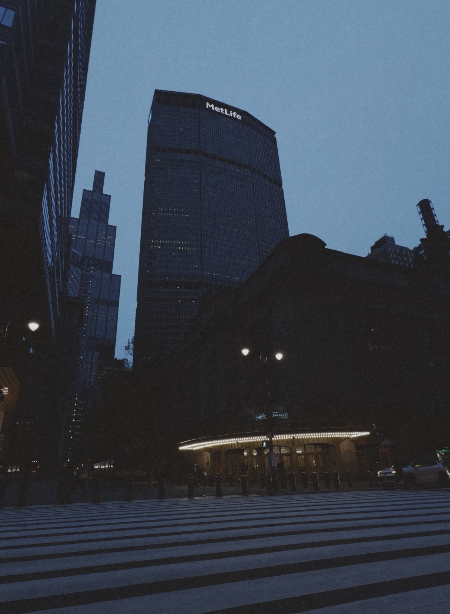
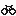
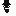

Nitrate
A film-inspired video camera for iPhone. Record, render on device, and save to Photos.
Product preview →Fieldnotes
New York. I work on small tools where the craft shows — a film-inspired camera, a quiet place to write, and whatever I could not find off the shelf.


Personal photographs to come.
A film-inspired video camera for iPhone. Record, render on device, and save to Photos.
Product preview →A local-first writing workspace. Plain markdown files you own, versioned with Git, built for product work.
Product preview →
OpenVeloOpen-source terminal trainer control for virtual cycling. Smart trainer, workouts, GPX routes, Strava.
github.com/johnjazzi/open-velo
16×16, two wheels and a frame.
Versai
Real-time translation built for iOS. Speech in one language, translation out in another, running on the phone.
A speech bubble — talk in, translation out.
Canonical v0
A Vue SaaS for product artifacts — the first attempt at the workspace that became Canonic.
Pivoted — the SaaS shape fought the vision. Rebuilt local-first as Canonic.

Robo LincolnA character-level RNN trained on Lincoln's writing to generate new text in his voice — an early language model, before that was a category.
github.com/johnjazzi/Robo_lincoln
16×16, drawn from the model's namesake.
Draft — owner confirmation needed.